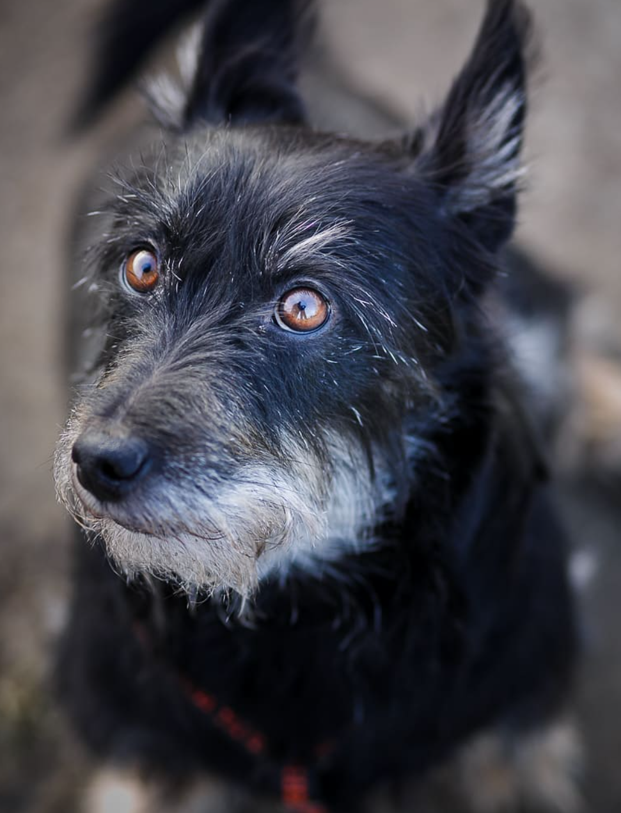

Pes domáci
Na základe početných archeologických nálezov z rôznych kútov sveta
sa pes považuje nielen za prvé domestikované zviera, ale aj za prvé
zviera, ktoré človek cielene choval. K udomácneniu vlka došlo viackrát
v rôznych častiach sveta a v rôznom čase nezávisle od seba (avšak
najneskôr pred 10 000 rokmi). Tradične sa predpokladá, že k udomácneniu
psov došlo na Blízkom alebo Strednom východe, nedávna štúdia naznačila,
že psy môžu mať európsky pôvod. Z kostrových nálezov niekoľkých druhov
psov sa odvodzovali a dodnes odvodzujú dnešné plemená. Za najstaršie
praplemeno bol označený takzvaný pes močiarny či rašelinný (lat. Canis
familiaris palustris Rütimeyer), od ktorého sa dodnes odvodzujú početné
plemená špicov, pinčov a teriérov. Skupina severských, vlkom podobných
psov a pastierske psy sú odvodzované od psa, ktorého kostra bola objavená
vo vykopávkach pri Ladožskom jazere, a ktorý dostal meno Canis familiaris
Inostranzewi. Skupina dogovitých psov sa odvodzuje ešte aj dnes od predka
nazvaného Canis familiaris decumanus. Z doby 4000 až 5000 rokov pred Kr.
pochádza pes bronzový (lat. Canis familiaris matris optimae), z ktorého
majú pochádzať ovčiarske psy. Najmladším psom má byť Canis familiaris
intermedius, z ktorého sa zvyknú odvodzovať dnešné duriče a pudle.

Pôvod a domestikácia psa
Podľa teórie Gregoryho Aclanda, veterinára z Cornellskej univerzity v Itake
v USA nie človek domestikoval psa, ale naopak, pes sám urobil prvý krok
a začal spolužitie s človekom, pretože sa kŕmil jeho odpadkami. Na oplátku
strážil „svojich“ ľudí pred nepriateľmi a pomáhal pri love. V dôsledku
dlhodobej koevolúcie s ľuďmi sa u vlkom vytvorila celá rada behaviorálnych
(napr. znížená agresivita), ale aj genetických adaptácii. Nedávne štúdie
odhalili, že genómy vlkov a psov sa líšia až v 36 regiónoch (122 génov).
19 regiónov je zodpovedných za činnosť mozgu a 8 regiónov sa uplatňuje
pri vývoji nervového systému (tieto regióny by mohli stáť za behaviorálnymi
zmenami u vlkov). Navyše bolo identifikovaných 10 génov hrajúcich kľúčovú
úlohu pri trávení škrobu a metabolizme tukov. Práve tieto nové adaptácie
zrejme umožnili vlkov efektívnejšie sa priživovať na ľudskej strave.
Nasvedčuje tomu aj fakt, že dnešné plemená psov sú oveľa lepšie prispôsobené
pojedaniu škrobovín ako typicky vlčej potrave, mäsu.
Stavba tela psa
Telo psa sa skladá z niekoľkých sústav orgánov, z ktorých každá vykonáva určité
funkcie. Osou kostry psa je chrbtica, na ktorej stranách sa nachádzajú rebrá
a končatiny a ku ktorej je pripojená lebka. K lebke je pripojená sánka, ktorá
v závislosti od určitého psieho plemena umožňuje silný záhryz. Na sánke a v čeľusti
sú uložené zuby. Na kostre sú upevnené jednotlivé svaly psa. Tie umožňujú jeho
pohyb, dýchanie. Svalovú sústavu pokrýva koža. Tá sa skladá z dvoch vrstiev – endodermy
(vnútorná vrstva) a epidermy (vonkajšia vrstva). Epiderma nie je u psa taká hrubá
ako u človeka, pretože neplní ochrannú funkciu v takom rozsahu, ako je to u ľudí.
Ochrannú funkciu preberá srsť. V závislosti od plemena psa, majú niektoré psy srsť
zloženú z dvoch druhov: podsady a krycej srsti. Korienky chlpov krycej srsti sú
spojené s malým svalom, ktorý podľa potreby chlp vzprieči – pes sa tak vizuálne
zväčší a srsť psa vďaka tomu plní okrem ochrannej funkcie aj funkciu komunikačnú.
Pes má po celom tele umiestnené apokrinné potné žľazy, ktoré produkujú výlučky
podobné ľudskému potu. Tento pot však nemá ako u ľudí termoregulačnú funkciu,
ale zabezpečujú psovi jedinečný pach, vďaka ktorému sa odlišuje od svojich spolu-druhov.
Termoregulácia u psa prebieha pomocou potných žliaz umiestnených na chodidlách psa
a tiež pomocou srsti, ktorá má termoizolačné vlastnosti a zabraňuje prehriatiu organizmu.
Najpozoruhodnejším psím zmyslom je zrejme čuch. Vďaka nemu sa pes orientuje v priestore,
loví zver a zisťuje o okolitom svete dôležité informácie. Strata čuchu znamená pre psa
asi toľko, čo strata zraku pre človeka. Pes, ktorý nemá možnosť vnímať čuchové podnety
v dostatočnej miere, žije chudobným duševným životom. Najdôležitejším čuchovým orgánom
psa je mozog. V ňom pes identifikuje pachy prijaté nosom. Ďalším dobre vyvinutým zmyslom
u psov je sluch. Psí sluch je citlivejší ako sluch človeka. Okrem toho je ucho psa
ovládané sedemnástimi svalmi, ktoré mu umožňujú hýbať ušami do rôznych smerov,
vďaka čomu je pes schopný lepšie lokalizovať smer zvuku.
| Plemeno | Pôvod | Popis |
|---|---|---|
| Aljašský malamut | Aljaška | Aljašský malamut je najväčší a najsilnejší z ťažných psov a tomu tiež zodpovedá jeho vzhľad: Malamut má kompaktnú telesnú stavbu s hlbokým hrudníkom a silnými ramenami, ktoré mu umožňujú ťahať ťažké bremená. |
| Austrálsky ovčiak | Austrália | Austrálsky ovčiak je stredne veľký a pekný pes, ktorý bol pôvodne vyšľachtený na pasenie, a vyžaduje si tak náročné a rozmanité spôsoby zábavy, ktoré ho budú rozvíjať po fyzickej aj duševnej stránke. |
| Borderská kólia | Anglicko | Inteligentná a náročná borderská kólia s pomerne dlhou alebo krátkou srsťou je pastierskym psom v pravom slova zmysle – takže ako rodinný pes je vhodná iba v obmedzenej miere. |
| Dalmatín | Dalmácia | Stredný až väčší pes s nezameniteľnými tmavými škvrnami. Je veľmi agilný a hľadá fyzické aj duševné výzvy. |
| Jack Russell Teriér | Austrália | Malý, inteligentný a živý – toto ešte stále mladé plemeno si medzi milovníkmi psov získalo už množstvo fanúšikov. |
| Nemecký ovčiak | Nemecko | Nemecký ovčiak je najrozšírenejším psím plemenom na svete. Vďačí za to svojej učenlivej a radostnej povahe a ľuďom orientovanému naturelu. Sú to všestranní psi vhodní pre rodinný život. |